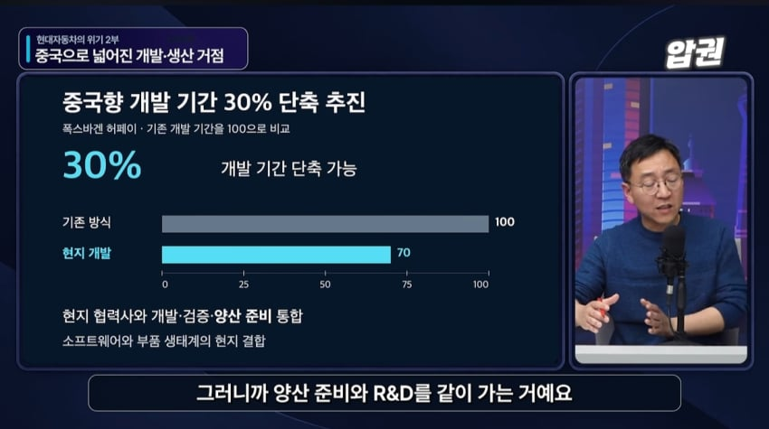
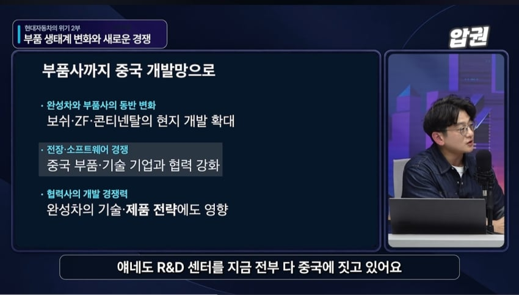
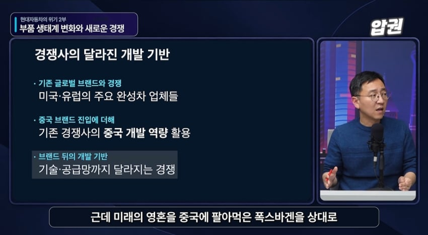
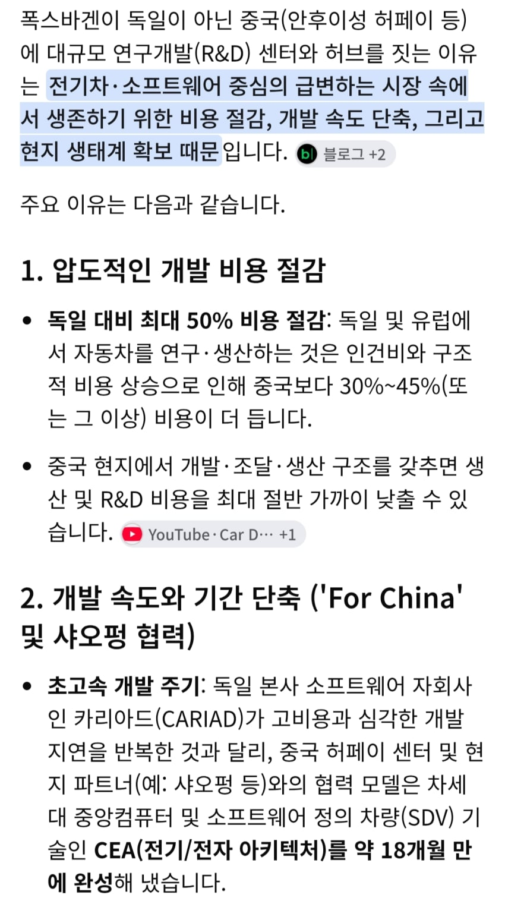
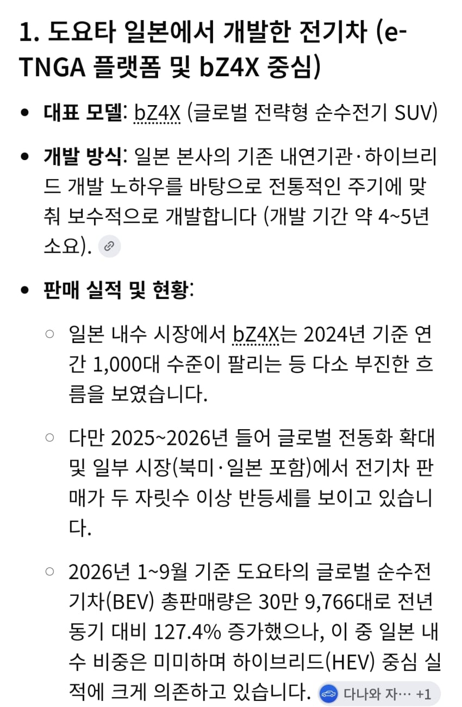
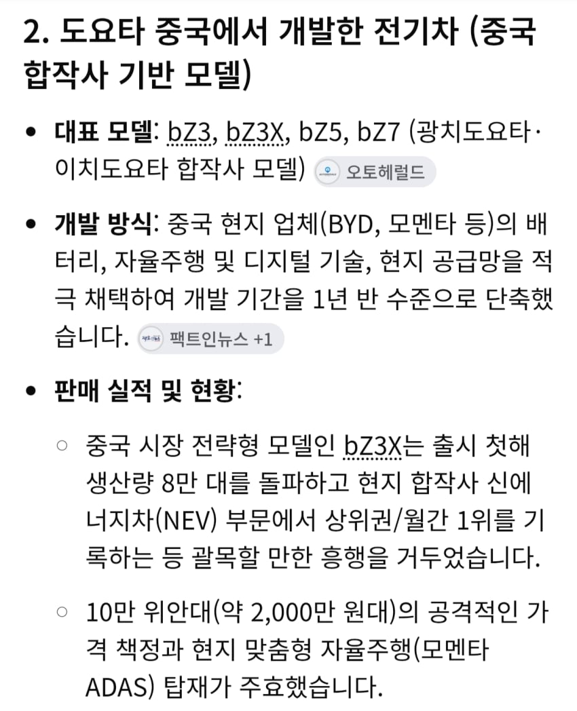
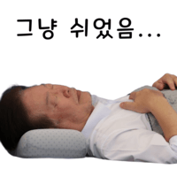

최근 폭스바겐, 르노 등 유럽자동차회사들이 중국기업들과 손잡고 중국개발툴, 중국전기자동차방식, 중국AI로 자동차 만든다는 뉴스 많이 나와서 다들 알거임..

진짜 큰 문제는 생산을 중국에서 하는게 문제가 아니라, 개발을 중국에서 하고 있다함
폭스바겐의 경우 이미 중국에 대규모 개발센터가 3개나 있음...

이게 똑같은 인력으로 개발해도 독일에서 개발한 것보다, 중국에서 개발한게 개발기간 반이상 짧고 비용도 절반이라는 것...
충격적인건 도요타의 사례임


일본 도요타 R&D센터에서 거의 10년간 개발한 전기차는 폭망했는데, 중국 도요타서 1.5년만에 개발한 전기차는 흥행 성공...
"개발·연구"라는게 흔히 천재 몇명이 뚝딱하는게 아니라, 딱딱 과정순서로 이뤄지는 생산제조같은거라 시간 갈아넣는 환경이 중요하고
(유럽은 반도체 못 하는데 동아시아는 하는게 노동집약이기 때문인 것과 일맥상통함)
특히 자동차의 개발은 본사만 하는게 아니라,밑에 수많은 부품사, 협력사들이 같이 하는거라함
근데 저런 전기자동차부품사, 협력사들의 개발역량이 중국이 독일 일본 부품·협력사들보다 훨씬 뛰어나다는게 문제...
심지어 인재의 질마저 짱깨 스카이대 나온 애들이 독일 스카이대 나온 애들보다 낫다는 것...
거기에 중국은 각종 개발하는데 규제도 적다보니 더욱 빠른 실정이라함
그래서 너도 나도 중국에 R&D센터 짓고, 거기 다니는 짱깨엘리트들이 이곳 저곳 이직하다보니 중국전기차회사들도 같이 개발역량이 높아지는 현상이 벌어진다함...
과연 현기차는 살아남을 수 있을까...
댓글
수집 당시 댓글 173개
주오월 · 11.10 08:06:56
ㅇㅇ · 11.10 08:07:08
ㅇㅇ · 11.10 08:07:37
ㅇㅇ · 11.10 08:07:44
ㅇㅇ · 11.10 08:08:22
· ㅇㅇ · 11.10 09:39:18
· ㅇㅇ · 11.10 11:09:52
· ㅇㅇ · 11.10 11:54:23
· ㅇㅇ · 11.10 12:14:11
· ㅇㅇ · 11.10 12:16:22
· ㅇㅇ · 11.10 13:35:44
· ㅇㅇ · 11.10 13:48:47
· ㅇㅇ · 11.10 13:49:23
· ㅇㅇ · 11.10 13:53:49
· ㅇㅇ · 11.10 13:54:07
· ㅇㅇ · 11.10 13:54:21
· ㅇㅇ · 11.10 13:56:12
· ㅇㅇ · 11.10 14:01:09
· ㅇㅇ · 11.10 14:04:08
... · 11.10 08:08:44
ㅇㅇ · 11.10 08:09:40
ㅇㅇ · 11.10 08:10:59
ㅇㅇ · 11.10 08:10:59
· ㅇㅇ · 11.10 08:13:52
· ㅇㅇ · 11.10 08:18:22
· ㅇㅇ · 11.10 08:21:54
· ㅇㅇ · 11.10 08:34:20
· ㅇㅇ · 11.10 09:40:19
· ㅋㅋ · 11.10 10:27:56
ㅇㅇ · 11.10 08:13:43

ㅇㅇ · 11.10 08:22:03
ㅇㅇ · 11.10 08:22:51
ㅇㅇ · 11.10 08:24:17
· ㅇㅇ · 11.10 08:26:31
· ㅇㅇ · 11.10 09:17:03
· ㅇㅇ · 11.10 10:32:36
ㅇㅇ · 11.10 08:25:27
ㅇㅇ · 11.10 08:27:03
· ㅇㅇ · 11.10 08:27:36
· ㅇㅇ · 11.10 08:28:06
· ㅇㅇ · 11.10 09:41:57
· ㅇㅇ · 11.10 09:42:34
· ㅇㅇ · 11.10 13:55:43
ㅇㅇ · 11.10 08:27:09
· ㅇㅇ · 11.10 09:42:56
ㅇㅇ · 11.10 08:27:46
ㅇㅇ · 11.10 08:33:11
ㅇㅇ · 11.10 08:35:22
· ㅇㅇ · 11.10 09:43:03
티뀨 · 11.10 08:36:29
ㅇㅇ · 11.10 08:44:37
ㅇㅇ · 11.10 08:44:56
· ㅇㅇ · 11.10 09:43:54
· ㅇㅇ · 11.10 09:44:45
ㅇㅇ · 11.10 08:45:20
· ㅇㅇ · 11.10 08:48:20
· ㅇㅇ · 11.10 08:56:53
· ㅇㅇ · 11.10 09:46:08
ㅇㅇ · 11.10 08:47:41
ㅇㅇ · 11.10 08:53:55
키주아니 · 11.10 08:57:46
ㅇㅇ · 11.10 08:58:01
tt · 11.10 09:05:22
· ㅇㅇ · 11.10 09:45:33
ㅇㅇ · 11.10 09:08:44
ㅇㅇ · 11.10 09:19:06
ㅇㅇ · 11.10 09:20:04
ㅇㅇ · 11.10 09:30:32
ㅇㅇ · 11.10 09:55:51
ㅇㅇ · 11.10 10:03:25
ㅇㅇ · 11.10 10:09:17
ㅇㅇ · 11.10 10:19:25
NO벨과학상개센징 · 11.10 10:19:55
· NO벨과학상개센징 · 11.10 10:20:23
· NO벨과학상개센징 · 11.10 10:21:07
· NO벨과학상개센징 · 11.10 10:21:19
ㅇㅇ · 11.10 10:33:42
ㅇㅇ · 11.10 10:34:34
짱퀴벌레
애쓴다
ㅇㅇ · 11.10 11:12:05
ㅇㅇ · 11.10 11:40:20
· ㅇㅇ · 11.10 12:10:14
ㅇㅇ · 11.10 11:43:21
ㅇㅇ · 11.10 11:48:49
ㅇㅇ · 11.10 12:22:42
ㅇㅇ · 11.10 12:51:36
00 · 11.10 13:11:57
ㅇㅇ · 11.10 13:20:07
· ㅇㅇ · 11.10 13:20:18
ㅇㅇ · 11.10 13:36:56
ㄱㅂㅈㄱㄷ · 11.10 14:34:27
ㄱㅂㅈㄱㄷ · 11.10 14:35:00
ㅇㅇ · 11.10 15:34:17
미쳐 · 11.10 15:39:44
ㅇㅇ · 11.10 15:43:35
ㅇㅇ · 11.10 16:35:14
ㅇㅇ · 11.10 17:06:45
한소희 · 11.10 17:08:18
ㅇㅇ · 11.10 17:29:38
ㅇㅇ · 11.10 18:02:36
ㅇㅇ · 11.10 19:20:28
ㅇㅇ · 11.09 00:08:42
· ㅇㅇ · 11.09 00:19:21
· ㅇㅇ · 11.09 10:23:21
· ㅇㅇ · 11.10 09:10:44
· ㅇㅇ · 11.10 09:32:42
· ㅇㅇ · 11.10 09:44:59
· ㅇㅇ · 11.10 09:54:31
· ㅇㅇ · 11.10 10:04:33
ㅇㅇ · 11.09 00:09:56
· ㅇㅇ · 11.10 09:33:04
쫍쫍이 · 11.09 00:12:04
· ㅇㅇ · 11.09 01:07:44
· ㅇㅇ · 11.10 09:11:12
ㅇㅇ · 11.09 00:15:27
· ㅇㅇ · 11.09 00:16:01
· 귀제비제비 · 11.09 00:18:43
· ㅇㅇ · 11.09 00:25:41
· ㅇㅇ · 11.09 01:13:33
· ㅇㅇ · 11.09 08:48:41
· ㅇㅇ · 11.10 08:28:57
· ㅇㅇ · 11.10 08:47:07
· ㅇㅇ · 11.10 09:33:44
· ㅇㅇ · 11.10 19:00:54
ㅇㅇ · 11.09 00:15:39
· ㅇㅇ · 11.09 00:16:52
· ㅇㅇ · 11.09 00:21:23
· 라그나르 · 11.09 00:34:38
· ㅇㅇ · 11.09 00:43:03
· ㅇㅇ · 11.10 08:55:07
· ㅇㅇ · 11.10 09:35:05
ㅇㅇ · 11.09 00:18:10
ㅇㅇ · 11.09 00:20:03
· ㅇㅇ · 11.10 08:47:19
· ㅇㅇ · 11.10 09:25:00
· ㅇㅇ · 11.10 09:36:03
· ㅇㅇ · 11.10 09:37:09
ㄴㅇ · 11.09 00:23:38
· ㅇㅇ · 11.10 09:36:16
ㅇㅇ · 11.09 00:24:48
· ㅇㅇ · 11.10 11:30:09
ㅇㅇ · 11.09 00:25:18
ㅇㅇ · 11.09 00:25:37
· 10콜맨 · 11.09 01:44:40
· ㅇㅇ · 11.10 08:39:52
MBAT · 11.09 00:29:54
· ㅇㅇ · 11.09 10:59:21
· ㅇㅇ · 11.10 08:39:02
· ㅇㅇ · 11.10 09:37:23
· ㅇㅇ · 11.10 11:23:50
ㅇㅇ · 11.09 00:44:52
ㅇㅇ · 11.09 00:51:38
· ㅇㅇ · 11.09 01:08:21
· ㅇㅇ · 11.09 01:27:28
· ㅇㅇ · 11.09 01:29:53
· ㅇㅇ · 11.09 03:57:21
· ㅇㅇ · 11.09 09:46:56
· ㅇㅇ · 11.10 08:05:48
· ㅇㅇ · 11.10 09:14:28
· ㅇㅇ · 11.10 09:37:49
ㅇㅇ · 11.09 01:07:11
· ㅇㅇ · 11.09 01:11:01
· 10콜맨 · 11.09 01:45:19
ㅇㅇ · 11.09 01:28:00
ㅇㅇ · 11.09 02:09:02
ㅇㅇ · 11.09 02:29:37
ㅇㅇ · 11.09 06:19:19
· ㅇㅇ · 11.10 13:33:57
· ㅇㅇ · 11.10 15:27:29
아냥딸통 · 11.09 16:26:22
땨뗘(봇) · 11.10 08:00:07
ㅇㅇ · 11.10 08:03:40
실베도로롱 · 11.10 08:03:59
· 실베도로롱 · 11.10 08:04:10